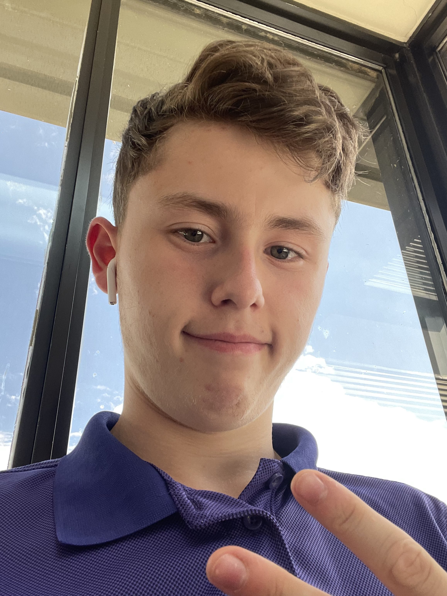

My name is Thomas Diraddo, I graduated from Glengarry District High school and in 2017 received a technologies award for excellence in digital literacy, critical thinking and problem solving. I am currently attending St. Lawrence College for Game programming. I built my own Pc and I have some experience with C++ and php.
Some of my hobbies are:
Here's a cool table I made
| Addition Table | |||||
|---|---|---|---|---|---|
| + | 1 | 2 | 3 | 4 | 5 |
| 1 | 2 | 3 | 4 | 5 | 6 |
| 2 | 3 | 4 | 5 | 6 | 7 |
| 3 | 4 | 5 | 6 | 7 | 8 |
| 4 | 5 | 6 | 7 | 8 | 9 |
| 5 | 6 | 7 | 8 | 9 | 10 |
Contact Information: NA
Tis better to Have Loved and Lost than Never to Have Loved at All
-Alfred Tennyson
mandatory blockquote line